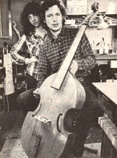

In celebration of little-known MOTHER-type folks from all over.
JERRY AND PAULA WOMACKS: VINTAGE VIOLS
Working out of an old farmhouse in Yellow Springs, Ohio, Paula and Jerry Womacks have been making a living-for the past five years-by creating and repairing, historical stringed instruments. The Womacks, who are both skillful musicians (Paula plays the banjo and Jerry the fiddle), first became aware of the need for instrumentmakers during the mid-1970's . . . and they determined to learn the trade themselves.
The couple studied under George Kelischek, a master violinmaker from Germany, until they were confident enough to set up a workshop of their own. Their business opened with the introduction of a variety of made-toorder leg viols (violas da gamba), fashioned according to the craft traditions of the seventeenth and eighteenth centuries (the Womacks are now gearing up to include handmade violins in their inventory, as well). In addition, they decided to take in stringed instruments for repair . . . and, instead of limiting sales to custom-built viols, began creating about half of their stock in advance.
Jerry and Paula have always been careful to use only the finest materials in their craft, and to spend whatever time is necessary to do every job right. The artisans work with spruce and maple that has air-dried for seven years, and put in painstaking hours shaping each part to perfection.
A single instrument can take from one to three months to build ... therefore, it should come as no surprise that the seven different types of viols the Womacks make range in price from $1,300 to $3,000 apiece. (Their violins will sell for about $1,200 each.) "Financially," says Paula, "we squeak by in the winter-after Christ mas and before taxes-and do pretty well in the summer." But the Womacks feel good about what they're doing (in fat times and lean ones) and that satisfaction, they attest, is worth a lot!-Doug Walker.
THE CORE FAMILY: AMERICAN AGRICULTURAL CONSERVATION GARDENS
When Connecticut attorney Samuel H. Coxe passed away on March 8, 1981, his family-wife Ruth and sons Samuel and Stanislaus-pooled their efforts to realize a dream that he had originally conceived in 1964. In the summer of 1981 the Coxes established the American Agricultural Conservation Gardens (AACG), a nonprofit educational service dedicated to recovering and preserving what have come to be called the four health freedoms: freedom to buy fresh foods devoid of pesticide poisons . . . freedom to buy prepared foods without artificial preservatives . . . freedom for babies to receive mother's milk instead of substitutes and supplements ... and freedom from irresponsible government endorsement of the indiscriminate use of drugs.
Ruth and her sons have exchanged agricultural information with, and distributed seeds to, farmers throughout the South American continent . . .and back home on their southern New England spread, the family has put new ecological farming techniques to the test. Sections of the Coxes' 34-acre farm have also been opened to outside groups . . .for experimentation with various types of soil amendments, leguminous cover crops, and mulching methods. Additionally, the family is planning to regularly publish a newsletter, which will report on field studies and help disseminate agricultural research information.
It's the Coxes' hope that, beginning in August of this year, AACG will be able to offer a program of instruction, demonstrations, and workshops (covering such topics as soil conservation, honey production, and solar energy applications), to be led by both wellknown and local experts in those fields. AACG's seven-point gardening plan for children-which leads youngsters through the fundamentals of crop cultivation-would be included in the conference as well. If you'd like to contribute labor, services, or a taxdeductible donation to the American Agricultural 'Conservation Gardens, contact Ruth Coxe at Sill House, Dept. TMEN, RR 2, Old Lyme, Connecticut 06371.
OZZIE TOLLEFSON: FUR, FLUKES, AND FLIPPERS
Fifteen years of classroom teaching experience and an extensive background in children's theater have helped Ozzie Tollefson create delightfully informative elementaryschool assembly programs. The 45-year-old freelance performer/ instructor has spent the past six years presenting lessons on such topics as the vikings, American Indians, inventors, dinosaurs, and whales to groups of children aged 5 to 12. Each of the shows features songs and colorful visual aids which help turn a lecture into a story . . . because Ozzie Tollefson is a master at entertaining as he teaches.
This year one of the dramatist's most successful presentations-Fur, Flukes, and Flippers: The Ocean According to Ozzie-has been sponsored by Washington, D.C.'s Center for Environmental Education . . . a nonprofit organization, which raised enough money to defray 60% of the program's cost to schools. Tollefson makes use of slides and handmade puppets and invites students to participate in his onstage demonstrations as he guides his young audience through a spellbinding maritime odyssey. "Ozzie Tollefson has a knack for making a subject come alive with creative energy and vivid imagery," says Dr. Carl N. Swanson of the New Jersey State Department of Education. "He's a storyteller and a teacher . . . with the finest combination of these two talents I have ever seen."
IN BRIEF . . .
DANIEL CAP, a 1981 graduate of Chicago's Bogan High School, has come up with an inexpensive way to remove cadmium (a toxic metal that's been linked to kidney disease and cancer) from sludge. Daniel's discovery involves the use of bacteria that react with sewage to produce hydrogen sulfide, which in turn facilitates the extraction of cadmium and other metals.
After conducting a study which indicated that only 5.3% of the people entering a local shopping mall chose to take the steps rather than the escalator, University of Pennsylvania psychologist KELLY D. BROWNELL decided to embark on a publicity campaign to encourage use of the less popular route. Brownell enlisted the help of Philadelphia Inquirer cartoonist TONY RUTH to come up with a placard-depicting a healthy, stair-climbing heart and a sluggish, escalator-riding one-which read, "Your heart needs exercise, here's your chance!" With the sign placed in full view of entering shoppers, the number of stair climbers nearly tripled.
Two soil scientists at the University of California at Riverside-WESLEY JARRELL and ROSS VIRGINIA-are studying mesquite's potential as a source of food and fuel. The plant's nitrogen-fixing ability enables it to enrich soil that's deficient in the nutrient . . . and its pods and seeds have been found to contain up to 50% sugar and 25% protein, respectively. The researchers' findings could help turn mesquite-which is sometimes called the "noxious weed" of the desert-into a viable commercial crop.
Weaverville, California's Trinity Alps Creek, from which water is piped down a 600-foot drop, is the energy producer behind GEORGE and BARBARA MALLETT's new enterprise, the Mom and Pop Power Company. Mom and Pop's hydroelectric power will feed into the Pacific Gas & Electric Company's grid and will earn the Malletts between 6.5 and 8.5 cents per kilowatt of energy produced.
|
 |
|
|